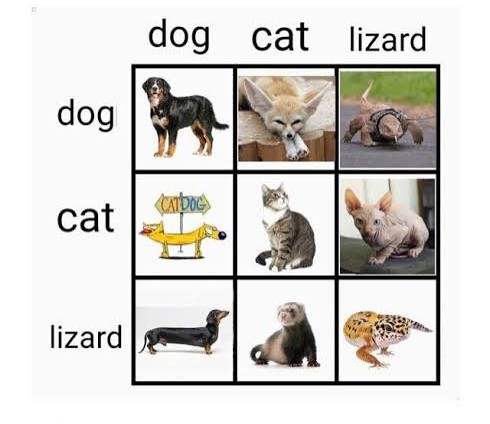
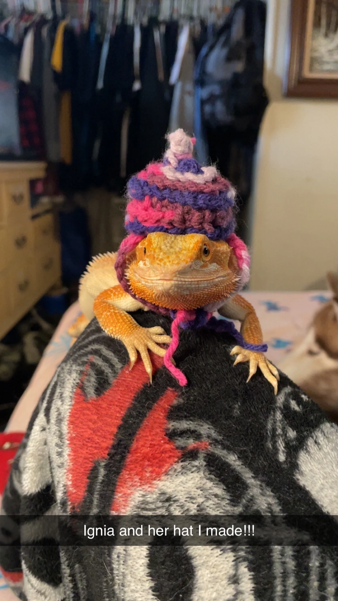
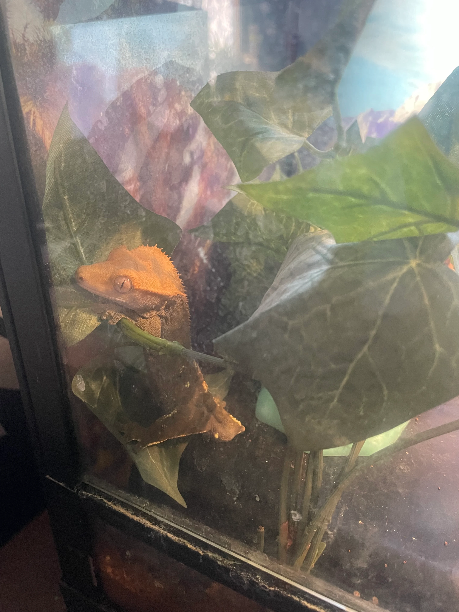
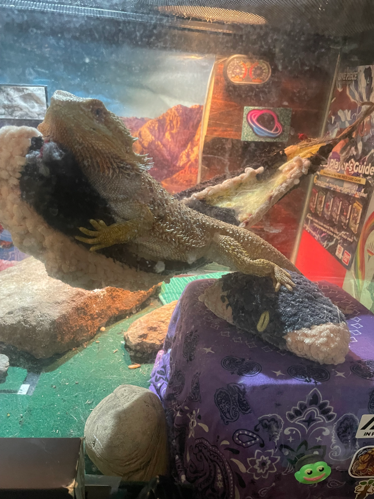
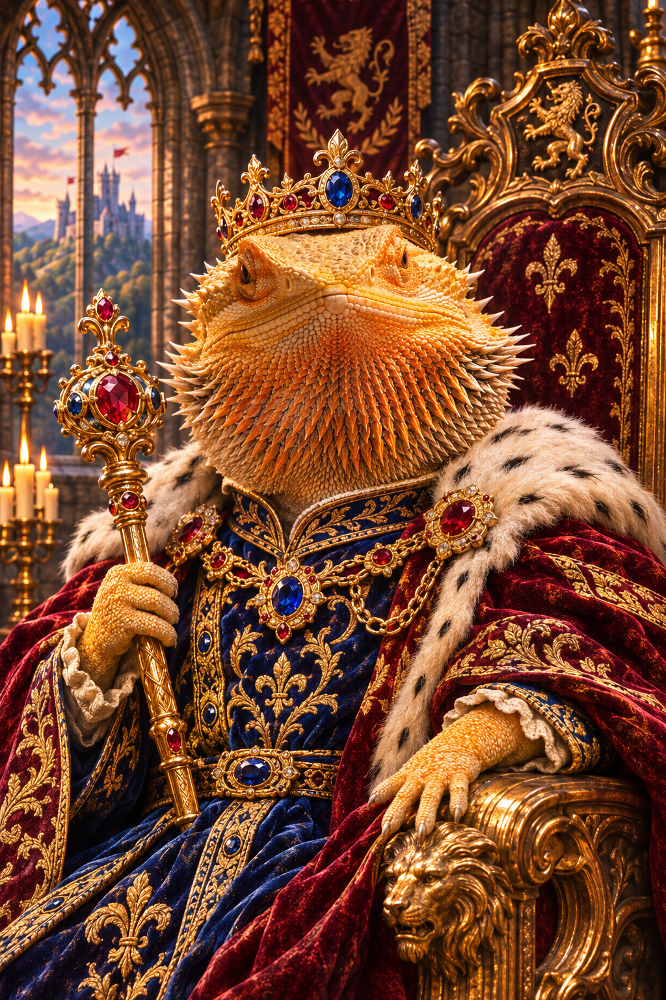
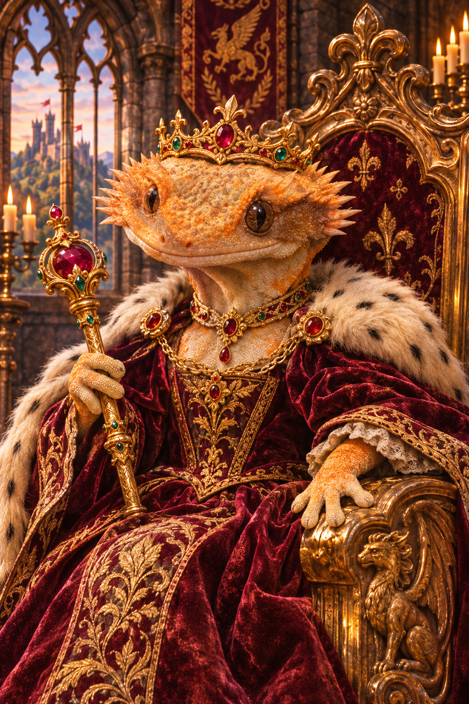
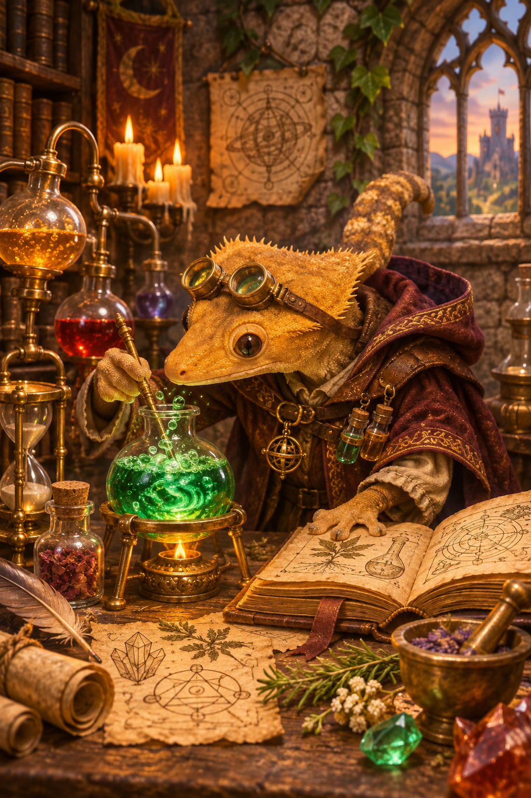
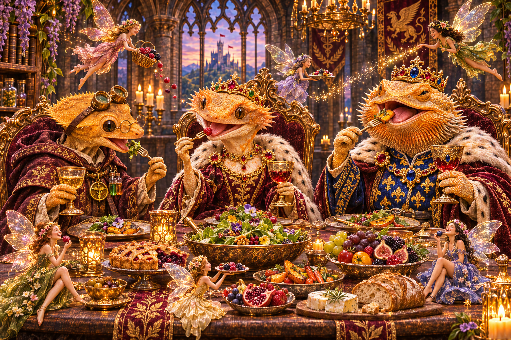
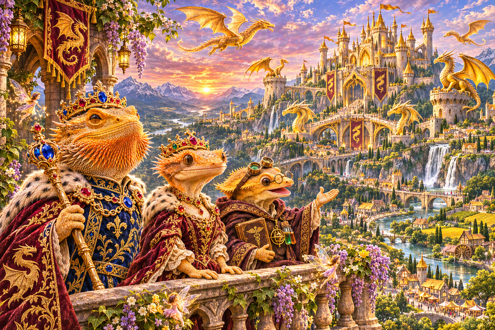
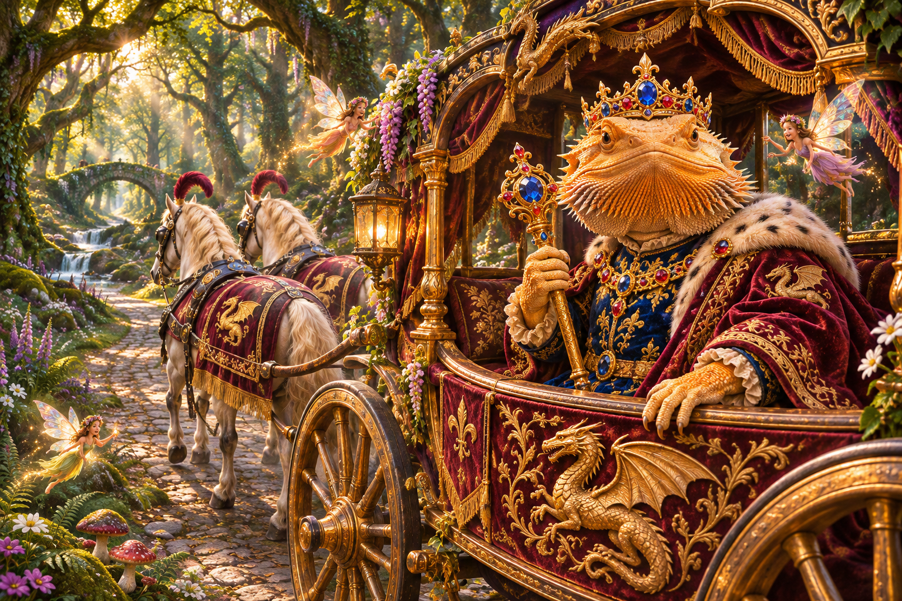

I Enjoy taking care of my pets. They are like family to me and they are always there when I need them.
Smaug he is my wonderful Emotional Support Animal. I have raised him since he was a baby. ive also
started a story about him. I plan on making it an AI story. I have a few more as well that have put into
my story. My reptiles are very special to me. I want to share them with you before we get to the main star.

Ignia
She is my 3 legged rakin dragin who is also called a red monster.
She is also one of my ESA pets as well. She very cute you would never know she has a leg missing.
I had no clue until i had finally held her and was proud that she didnt let anything let her stop her
from living. She had a strong will for living and she a joy when she is looking out the windows.
She is also in the story with Smaugh as well even though in real life she can not stand to look at him..

Gator
Gator is the crested gecko I orginally bought for my youngest son.
He thought he could hold him just like one of our dragons and the little guy escaped him.lol.
While Gator was running though the house, Im guess he saw the dogs because he had dropped his tail.
Now he has what we call a frog butt lol. He also has a part in my AI story as well.

Bearded Dragons
Bearded dragons are popular reptiles kept as pets. They are known for their docile nature and unique appearance. One of the main reasons I got Smaug
was because of his friendly personality and unique appearance. Because of this he has inspired me to make a story about him being a king and running his own Kingdom.
Smaug being the guy dragon he is. is a wonderful pet. When you see where King Smaug stands. Loyalty and helping others is one big thing King Smaug cares about.His Kingsguard
and sunbathing are very important to him. The health of others is important to him as he is running a kingdom and does want anyone to be sick or get hurt. He always has Dr. Gator
on call. When you meet his sister Ignia. She a beautful Red Queen of her own small Queendom. Smaugs Sister.
Created Gekos
The cute little guys of the rainforest. He always finding the highest place to be when hes wake. Normally they are night creature and only actuve at night.
Gator is a very speacical guy. He was saved from when my yongest son got him and thought he could hold him like a bearded dragon and he wont move. Well guess again.
That little guy ran though the entire house and dropped his tail. I assume he saw the dogs and cats and got scared. He was hding by one of our TVS. Now he has a cute frog butt.
Gator is very important to the story as he is the doctor of the kingdom and no one knows yet but hes also a scientist. he studies medince and ways be be better.
Gator will show his doctor skills when has to help and when the help is in need. He doesnt ever turn an eye to anyone he can help. Gator is always there as well when the food is served.
King Smaug:

This is a picture of Our wonderful King Smaug!
The start of King Smaug
King Smaug is a powerful and wise ruler of his kingdom.
Smaug the bearded Dragon is the king of his own kingdom. He runs his castle on a pretty tight schedule. As a solitary ruler, he is very quite clear about what his needs are and expects nothing but the royal treatment.
When it's breakfast time, he demands delicious eggs sprinkled with a touch of pollen. After breakfast, KingSmaug spends time basking in the warmth of the sun to help digest his royal feast. Once he has soaked up all the sun he needs, he settles in for a short morning nap before lunch.
When lunch time is here, king Smaug enjoys superworms mixed into his fresh salad and dusted with his favorite calcium powder. After finishing that wonderful meal, he returns to his sunny throne to bask once more.
Following his meaty feast, it’s time for his royal swim in a warm bath. Once bath time is complete, he uses his special dragon potty that is crafted from stone, of course. Then of to another most deserved nap.
After his long afternoon rest, dinner is served and this is his favorite part of the day. Horned worms! His absolute favorite food. They make him feel powerful, like he truly is the king that he is. Like he is the king of the world.
When dinner time is done, it's TV time! King Smaug loves when his favorite show, Dragon Ball Super is on. He loves just watching his favorite show and characters in action.
Finally, when TV time is over its bedtime. King Smaug climbs into a royal king size dragon bed curling up comfortably. Watch beneath his kingdom's watchful glow.
Being King Smaug may look easy, but ruling a dragon kingdom can be some powerful dragon business.
King Smaug of the Yellow Dragon Kingdom

King Smaug and his Royal Routines Chapter 1
Smaug the bearded Dragon is the king of his own kingdom. He runs his castle on a pretty tight schedule. As a solitary ruler, he is very quite clear about what his needs are and expects nothing but the royal treatment.
When it's breakfast time, he demands delicious eggs sprinkled with a touch of pollen. After breakfast, KingSmaug spends time basking in the warmth of the sun to help digest his royal feast. Once he has soaked up all the sun he needs, he settles in for a short morning nap before lunch.
When lunch time is here, king Smaug enjoys superworms mixed into his fresh salad and dusted with his favorite calcium powder. After finishing that wonderful meal, he returns to his sunny throne to bask once more.
Following his meaty feast, it’s time for his royal swim in a warm bath. Once bath time is complete, he uses his special dragon potty that is crafted from stone, of course. Then of to another most deserved nap.
After his long afternoon rest, dinner is served and this is his favorite part of the day. Horned worms! His absolute favorite food. They make him feel powerful, like he truly is the king that he is. Like he is the king of the world.
When dinner time is done, it's TV time! King Smaug loves when his favorite show, Dragon Ball Super is on. He loves just watching his favorite show and characters in action.
Finally, when TV time is over its bedtime. King Smaug climbs into a royal king size dragon bed curling up comfortably. Watch beneath his kingdom's watchful glow.
Being King Smaug may look easy, but ruling a dragon kingdom can be some powerful dragon business.
King Smaug On the way to see Queen Ignia Chapter 2
King Smaug is going on an adventure today. He's getting out of his royal bed, he calls his royal servants to get his breakfast ready and arrange his bed for sunbathing after breakfast. Then off to his adventure. As he eats his breakfast, he has his servants who have already dined get his dragon carriage ready for the adventure.The other servants after their meal will get the horses ready to be attached to the carriage. So that after sunbathing he can go on his merry way. King Smaug is very excited for his travels today.
As King Smaug is getting into his carriage he double checks that his schedule is perfect and that he will be where he's going on time. While sitting in his carriage, he has the windows open to see scenery, like the trees with green leaves and beautiful flowers he sees going along the trail. Enjoying the breeze from his window. On the journey King Smaug is aware that he has to go through town and make an appearance to the beautiful people of his dragon kingdom. Once he stops and talks and listens to his people he gets back on the carriage to get to go his merry way. Once again gazing out the window enjoying every bit of scenery.
When King Smaug gets to the end of the trail. He steps out of his carriage to look at another beautiful castle of a neighboring dragon kingdom. As he walks up the long stairs, he's greeted with another very proud royal guard. Ascending down the stairs is beautiful Queen Ignia walks to greet her brother King Smaug. They haven't seen each other in a while.Queen Ignia invited King Smaug to come and visit to see how she ran her kingdom and how she looks a lot up to her big brother King Smaug. They enjoyed their week of events together. Before King Smaug had to leave he invited her to come visit home anytime. King Smaug also let her know how proud of Queen Ignia he was on how she’s running her kingdom.


King Smaug The Savior
King Smaug having another beautiful morning. Waking up with his royal servants getting his breakfast ready. Other royal servants are still eating as King Smaug wakes up. He prefers his royal servants to have a healthy balanced diet. He always makes sure all the royal servants are in good health. But today he needs everyone to eat extra because after breakfast King Smaug and his royal knights are going to town.
After King Smaug is all done eating breakfast, he has his royal carriage ready for his nice trip. Once King Smaug and his Royal knights are off they start off on the dirt road called “Kings Road”. Kings Road goes through the fairy forest where the fairies live. King Smaug is always happy to go through the fairy forest due to how beautiful the forest is. During the trip they came to a stop and King Smaug wanted to know why they were stopped.
King Smaug steps out of the carriage to see what is going on and he sees the fairy princess needs help. He asked what was wrong with her and what he could do to help. (King Smaug has peace with all surrounding kingdoms). They let him know she was sick and needed healing. King Smaug told the fairy soldiers to report back to the fairy king and queen and to let them know King Smaug was taking her into town for the best treatment possible. Now the once beautiful trip to town was an emergency to get the fairy princess treatment to save her life.
Once the Royal carriage had made it to town. They went straight to Dr. Gator the gecko doctor to save the fairy princess. Dr. Gator looked at King Smaug and said you got her here in time for your grace. Dr. Gator came out of the doctors room after doing some tests on the fairy princess to understand why she was sick. Dr. Gator discovered that she ate poison berries from the forest. He notices the color of the berry on her fingers. Dr. Gator had the antidote to heal the fairy princess.
The fairy king and queen came to King Smaug's kingdom. They rushed as fast as they could to get to their baby girl. King Smaug let the parents know she ate the wrong kind of berries and she needed to be able to identify which ones to eat and which ones to not eat. King Smaug did assure them that she was alive well and resting. King Smaug Invited the fairy king and queen , fairy princess and Dr. Gator to lunch since it was lunch time and King Smaug said “ I've had quite the adventure today!” As they sat down to eat lunch they just enjoyed the time they had which eating and chatting.

Characters that are in the story and will be in the story.
King Smaug is citress bluebar beadred dragon
Queen Ignia is a red raking dragon
Dr. Gator is a harly quinn gecko
Officer Blu is a green/Blue iguana
The Bar/Restruant Owner Mr.Tree is a white tree frog.
Lil Glorilla the waitress is a pacman frog or also called ornate frog.
Odie the chef us a pitbull/Huskey mix
Genji the Genral is a husky
Garfield the gakekeep is a norwegin forest cat.
Artemis the flower keep is a mini manecoon
Wedensday (Wen Wen) is an asian forest scorpian
Yellow Dragon Kingdom
As they look on from the tavren. They admiring the beautiful sunset in the amazing yellow dragon kingdom.

The beautiful Yellow Dragon Kingdom as the sun sets.
My Mission is to create a book for children or anyone who love animals and reptiles and insects.
My goal is to turn this into an AI story so we can have books and a show, that are both educational and entertaining.
i want to create a book that teaches children about different animals, reptiles, and insects in a fun and engaging way. By having them share human stories while still being themsleves as the animals that they still are in real life.
King Smaug On to the Fairy Kingdom

if (true {
alert("Hello");
}
King Smaug on is way to the Red dragon kingdom to see his sister Queen Ignia.
As King Smaug is making his rounds arounf the kingdom today He came acroos his trust gateskeeper Garfield. Garfield is an orange norweigian forest cat.
He awlays keep watch of who comes in to the kingdom and who leaves the kingdom. Garfield is a very loyal and trustworthy cat. He has been with King Smaug since King Smaug was a baby. Garfield is very proud to be the gateskeeper of the Yellow Dragon Kingdom. He takes his job very seriously and always makes sure that only those who are welcome enter the kingdom. Garfield is also very protective of King Smaug and will do anything to keep him safe.
As kind Smaug is leaving to another aventure to see his sister Queen Ignia. Garfield is making sure that King Smaug is safe and that he has everything he needs for his journey. Garfield is also making sure that the kingdom is safe and that no one is causing any trouble while King Smaug is away. Garfield is a very important part of the Yellow Dragon Kingdom and King Smaug is very grateful to have him as his gateskeeper.
He is also very proud to be the gateskeeper of the Yellow Dragon Kingdom. He takes his job very seriously and always makes sure that only those who are welcome enter the kingdom. Garfield is also very protective of King Smaug and will do anything to keep him safe.
As King Smaug is leaving to another adventure to see his sister Queen Ignia. Garfield is making sure that King Smaug is safe and that he has everything he needs for his journey. Garfield is also making sure that the kingdom is safe and that no one is causing any trouble while King Smaug is away. Garfield is a very important part of the Yellow Dragon Kingdom and King Smaug is very grateful to have him as his gateskeeper.
As King Smaug is on his way out to get his sister from the red queendom. He is very excited to see his sister and to spend some time with her. He is also very proud of his sister and the way she runs her kingdom. He is looking forward to seeing her and to spending some time with her. He is also looking forward to seeing the red dragon kingdom and to learning more about it. He is also looking forward to seeing the other dragons in the red dragon kingdom and to learning more about them. He is also looking forward to seeing the other animals in the red dragon kingdom and to learning more about them. He is also looking forward to seeing the other insects in the red dragon kingdom and to learning more about them.
They will both adventure over into the dog territory to see the Dog kingdom. They will be going to the dog kingdom to see the Dog princess and to make sure she is doing well. They will also be going to the fairy kingdom to learn more about the fairies and their way of life. They will also be going to the fairy kingdom to learn more about the other animals in the fairy kingdom and to learn more about them. They will also be going to the fairy kingdom to learn more about the other insects in the fairy kingdom and to learn more about them.
Here is on how some of the creatures live in real life
beared dragons need sunlight to digest food.
crested geckos are excellent climbers. love to be un high places and also hide in trees.
rakin dragons are known for their strength and protective nature, do not have beards like the beaeded dragon.
Green iguanas eat alot of lettice and need the sun to digest their food.
packman frogs and tree frogs are both amphibians that live in moist environments. they are also nocturnal.
With having different creatures around me i feel very alive and excited to learn more about them.
i treat them all with love and care and i can't help but feel grateful for their presence. i feel blessed to be their owner well i like to think they are just family,
Making these stories have ehlped me alot as a person and my pets/babies have shown the person i am and what im capable of doing. I have learned alot about myself and my pets/babies have taught me alot about life and how to be a better person. I am grateful for their presence in my life and i will continue to learn from them and grow as a person.